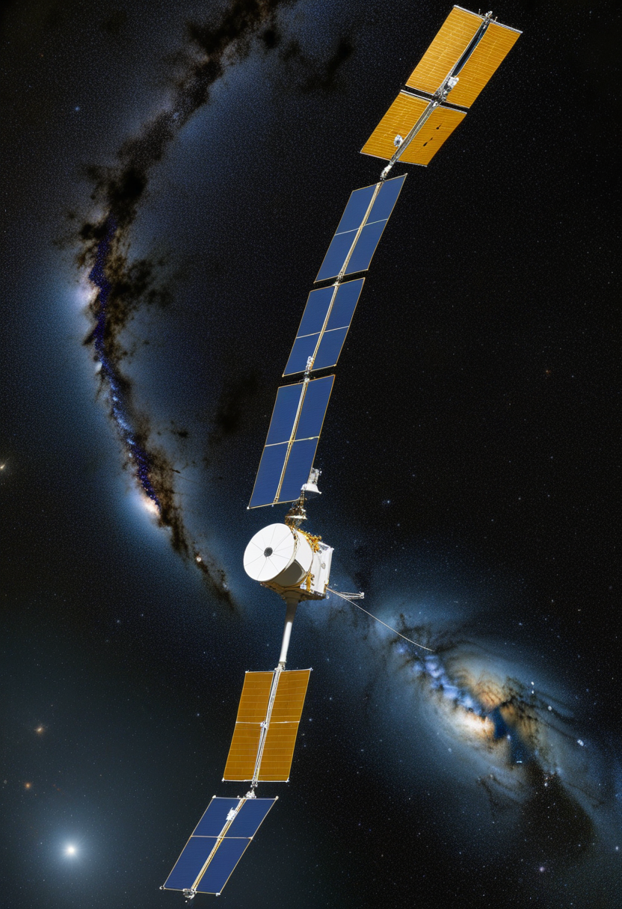
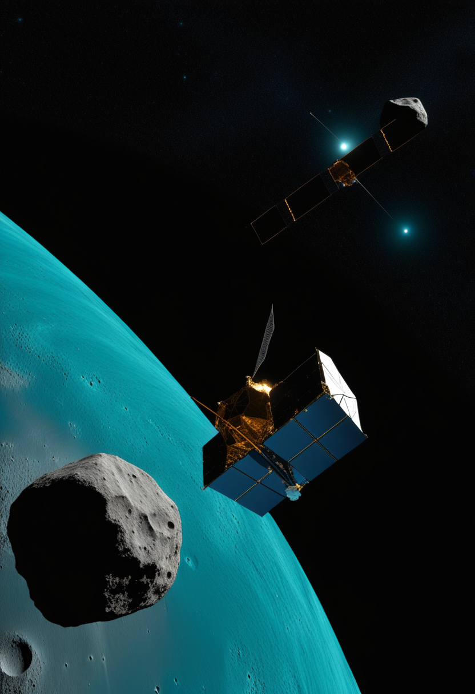
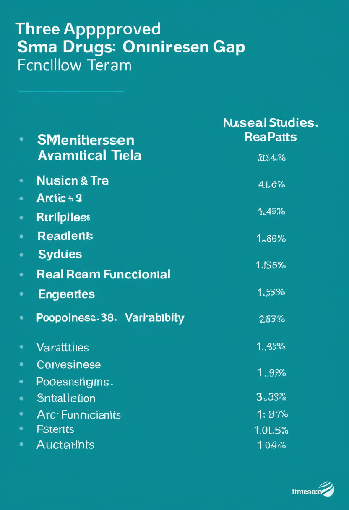
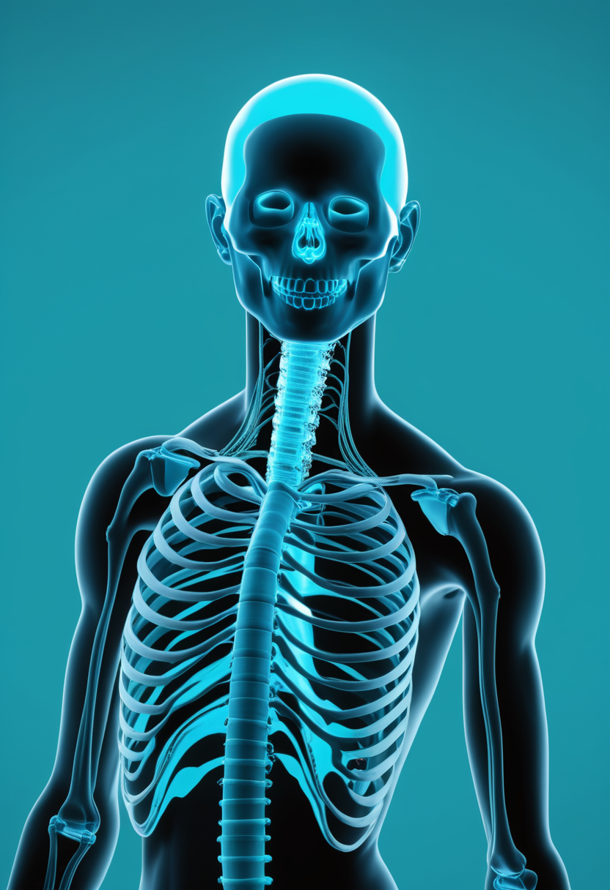
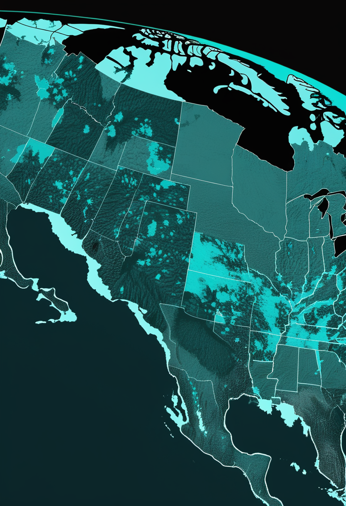
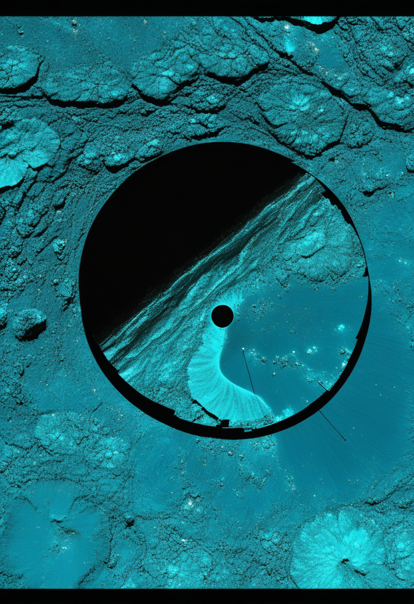

火曜日の便り。中国の探査機・天問2号が準衛星小惑星カモオアレワへ20km圏まで接近し、7月6日に初めての近接画像を公開した。地上望遠鏡では直径40〜100mと推定されていたこの天体は、画像から直径約20mの細長い岩塊で自転周期28分と判明し、7月から2027年4月にかけてタッチ&ゴー方式で200〜1,000gの試料採取に挑む計画だ。地上ではエボラ(ブンディブギョ型)の確定例が1,481例のまま高止まりする一方、フランスで確認された症例がDRCから帰国した医師だったことが新たに分かった。米州では麻疹が前年比+181%の22,974例に急増し、ワクチン忌避地域での再興感染症の広がりが続く。BCIの世界ではSynchronが恒久移植型BCIのピボタル試験で患者登録を開始し、Tobiiは屋外でも使える視線入力デバイスを世界で初めて投入した。

中国国家航天局(CNSA)は7月6日、小惑星探査機・天問2号が約10億kmの航行を経て準衛星小惑星カモオアレワ(2016 HO3)へ20km圏まで接近して撮影した初画像を公開したと発表した。地上観測ではこれまで直径40〜100mと推定されていたが、画像からは直径約20mの細長い天体で、自転周期は28分と判明した。7月から2027年4月にかけてタッチ&ゴー方式などで200〜1,000gの試料採取を行う計画で、はやぶさ2のリュウグウ探査(7/5号既報のトリフネ超接近フライバイに続く)で培われた技術が、今度は月起源の可能性が指摘されるこの小さな天体の謎に迫ろうとしている。
Scholar Rock社の抗ミオスタチン抗体アピテグロマブは、FDAの優先審査(Priority Review)対象として審査結果通知期限(PDUFA)9月30日に向けた審査が続く一方、欧州医薬品庁(EMA)も販売承認申請(MAA)を受理し、CHMPの意見表明を2026年半ばに見込むと新たに判明した。第3相SAPPHIRE試験(2〜21歳のSMA2型・3型患者180例超)では運動機能スコアがプラセボ群を有意に上回っている。

ヌシネルセン・リスジプラム・オナセムノゲンアベパルボベクという既承認3剤について、21件の研究・患者1,374人分のデータを統合した実臨床レビューが公表された。最長48か月の追跡で機能予後に関する知見が蓄積される一方、研究間でアウトカム指標にばらつきがある点も課題として指摘されている。
アピテグロマブが大西洋の両岸で規制トラックを前進させる一方、既承認3剤の大規模実臨床レビューは、SMA治療がすでに「新薬待ち」から「長期データの検証」の段階に入りつつあることを示している。
視覚野へ直接電極を刺入し完全失明者への人工視覚提供を目指す「Blindsight」は、FDAの画期的機器指定(7/6号既報)を追い風に、2026年中の臨床試験開始を見据えて開発が進む。次世代機では電極数を現行の3倍に増やす計画も予告されており、視覚回復という新領域への展開が注目される(安全性・有効性が確認されたわけではない点に留意)。

血管内アプローチで頭蓋切開を伴わない「Stentrode」を開発するSynchronは、米国内4施設以上でピボタル試験の患者登録を開始した。成功すれば恒久移植型BCIとして初のFDA製造販売承認(PMA)申請に到達する見込みで、2025年11月に調達した2億ドル(Series D)が商用化準備を支えている。
ALSや脳性まひなど手や声を使えない人向けに、Tobiiは屋外の強い日差し下でも使用できる視線入力コミュニケーション機器を業界で初めて実用化した。手のひらサイズの視線トラッカーが、これまで屋内に限られがちだった視線入力の行動範囲を大きく広げる(製品発表の正確な公開時期は要確認)。
侵襲型(Neuralink)・血管内(Synchron)・非侵襲(Tobii)という3系統のアプローチが同時並行で実用化フェーズに入りつつあり、患者層(失明・ALS・脳性まひ等)ごとの棲み分けが明確になってきた。
WHOのDisease Outbreak News(DON-612、7月3日付)による確定例(DRC1,460・ウガンダ20・フランス1、DRC単独の死者452例・7/1時点)から数字自体の更新はないが、フランスの症例がDRCから帰国した中年男性医師で、6/24に同国当局からWHOへ通報されていたことが新たに判明した。2026年5月のPHEIC宣言後も、医療従事者を含む国境を越えた感染拡大が続いている。

PAHO/WHOの状況報告(第6号、7/2付)によれば、2026年第1〜25週(6/27まで)の確定麻疹例は17か国・地域で22,974例に達し、前年同期比+181%の急増となった。エボラのPHEICが続く中、ワクチン忌避地域を中心とした再興感染症の拡大が並行して進んでいる。
エボラの数字そのものは動かなかったが、感染者に医療従事者が含まれるという事実が判明した一方、麻疹という別の再興感染症が米州で急拡大しており、公衆衛生の戦線は一つに留まらない。

中国国家航天局(CNSA)は7/6、小惑星探査機・天問2号が約10億kmの航行を経てカモオアレワ(2016 HO3)へ20km圏まで接近して撮影した初画像を公開した。地上観測では直径40〜100mと推定されていたが、画像からは直径約20mの細長い天体で自転周期は28分と判明した。7月から2027年4月にかけてタッチ&ゴー方式などで200〜1,000gの試料採取を行う計画。
NASAのX線天文衛星ChandraとESAのXMM-Newtonが、銀河系中心の超大質量ブラックホール「いて座A*」からわずか数十光年の距離に超新星残骸候補を発見した。確認されれば放出物質は時速約320万km(秒速約900km)、爆発から約1,700年経過と推定され、ブラックホール近傍で見つかった残骸としては最も近い部類となる。
日中の探査機が相次いで小惑星へ到達する天体探査ラッシュ(7/5はやぶさ2トリフネ、7/6天問2号カモオアレワ)に加え、銀河中心近傍の観測など、国境を越えた天文学的成果が同時多発している。
個人の認知システムを継続的にモデル化する「認知デジタルツイン」について、データプライバシーや医療実装上の課題、ガバナンス体制を論じる論文がarXivに公開された。臨床応用が現実味を帯びる中、標準化された規制枠組みが依然として存在しない点が指摘されている。
次世代BCIのデコード精度向上に向け、個々の神経活動パターンをリアルタイムで模倣する「神経デジタルツイン」の枠組みを提案する論文がarXivに掲載された。BCI(自由の章)とデジタル化(本章)の融合領域として、今後の進展が注目される。
全脳エミュレーションの実証が進む一方、今週は「認知をどうモデル化し、どう統治するか」という理論・倫理面の整備が、BCIとデジタル化という2つの角度から同時に前進した。
2026年7月7日、中国の天問2号が小さな準衛星カモオアレワの素顔を初めて捉えた。地上からの推定を覆す直径約20mという数字は、遠い岩塊がようやく輪郭を持った瞬間だった。地上ではエボラの数字が動かない代わりに、感染者の中に医療従事者がいたという事実が明らかになり、麻疹は米州で前年比+181%まで急増した。BCIの世界ではSynchronが恒久移植への患者登録を始め、Tobiiは屋外でも使える視線入力を世界で初めて届けた。認知をどうモデル化し、どう統治するかという問いにも、また新しい論文が一つ加わった。遠い天体の輪郭を確かめる手と、目の前の命と情報を守る手が、今週もまた同じ朝に並んでいる。
では、また明日の朝に。 — JaH